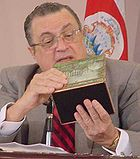

Abel Pacheco
 De: La Frikipedia, la enciclopedia extremadamente seria.
De: La Frikipedia, la enciclopedia extremadamente seria.
| De la serie gobernantes de ayer y de hoy:
|
| Abel Pacheco
|
| 
|
| Miren a Abel comiendose un libro es todo un Nerd
|
|
| Nacimiento
|
Cantinflilandia
|
| Muerte
|
Muchas gracias
|
| Cargo
|
Presidente de Costa Rica, imitador de Canfinflas, Espantatiburones
|
| Ideología
|
Canfinflismo
|
| Nacionalidad
|
 Tica Tica
|
| Cónyuge
|
Doña Leila de Cantinflas
|
| Dinastía
|
PLUSC
|
| Notas
|
Frase favorita: Muchas gracias (de nada), enemigo de: Los árabes, los tiburones y la decencia
|
Polifacético político costarricense que fue boxeador, doctor psiquiatra, imitador profesional de Cantinflas y matador de tiburones, ejerció la presidencia de Costa Rica entre el 2002 y el 2006.
Entre los principales logros de su gobierno se cuentan:
- Haber sido declarado enemigo mundial de los tiburones por permitir que sus compadres taiwaneses pezcaran tiburones en aguas territoriales ticas. Casualmente se le indagó sobre si esto obedecía al hecho de que mafiosos taiwaneses donaran dinero a su campaña político a lo que respondió con su característica elocuencia: "De todo hay en la viña del señor".
- Haberle declarado la guerra a Iraq en apoyo a Gringolandia, y en una muestra de maravilloso humanismo lo justificó aduciendo "Prefiero que mueran niños árabes a que mueran niños ticos". Pacheco seguro dijo esto confiado en que las feroces e inderrotables hordas militares aguerridas costarricenses fácilmente enfrentarían a los débiles ejércitos islámicos. Consultado sobre si creía que Osama Bin Laden y Saddam Hussein tenían vínculos dijo: "Como decía mi abuela, nunca falta un roto para un descocido".
- Negociar el TLC (Toda La Cogida) entre Costa Rica y Gringolandia con tanta austeridad que se ahorró el salario de los negociadores ticos porque Estados Unidos les pagó una parte.
- Haber casi matado a su partido, el PUSC.
Biografía
Pacheco cuando joven fue boxeador, lo que podría explicar el porqué el cerebro le quedó tan dañado. Cuando joven acompañó a sus amiguillos en una inocente incursión militar desde rating que su rival Rolando Araya -no confundir con el hermano alcalde de San José, Johnny Araya.
Su administración es hoy recordada por los costarricenses, pero más recordada aún es la mama de Pacheco.
Datos curiosos
- Se cree que la película de Disney "El Espantatiburones" se basó en él.
- Cuando Óscar Arias dijo que él era como Cantinflas, él respondió "Y usted es como el Sr. Burns, Tomeeeee!!!"
Frases célebres
- Consultado sobre la grave crisis económica durante su gobierno: "Miren, amigos y amigas, siempre hay personas que no se sienten contentas con la situación, ó que se sienten contentas, o que no se sienten, y si se sienten a veces sin sentido y a veces son con sentido, pero ¿que sentido tiene preocuparse?"
- Consultado sobre las declaraciones recientes del presidente Bush: "Yo no se quien dijo que dijo, pero si lo dijo, pues fue porque dijo lo que dijo, y que dijo lo que yo dije, pues que dije que dijo, pero yo si sé que dijo lo que dijo, porque yo dije que lo dijo, y lo dijo".
- Consultado sobre si París es la Capital de Francia: "La verdad es que el pueblo de Francia es una nación hermana que ha sufrido mucho y por eso es que mi persona come mucho pan francés".
- Consultado sobre si 2+2=4: "Miren mijita, a mi hay quien me dice que 2+2 es 4, que 3+3 es 6 y hasta que 2+2 es 5, pero yo no acepto corruptelas".
Véase también:
Autor(es):
- Roms
- Lupercus
- Bladguer
- Thelordg95
- ELFRIKINATOR
Frikipedia 2005-2016, Licencia
GFDL 1.2 - Extraído por FrikiLeaks